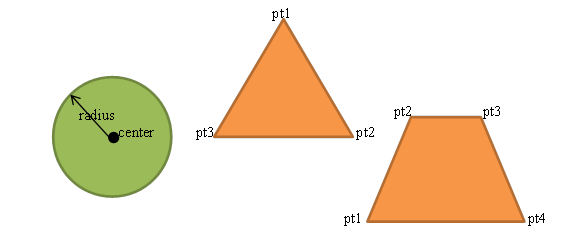
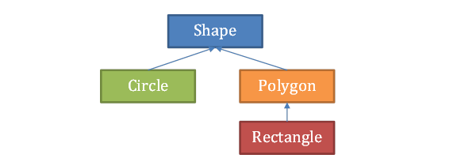

Objectives
For this assignment, you have to complete the three files: Circle.cpp, Polygon.cpp and Rectangle.cpp, using generic programming, standard template libraries and inheritance.
Specifications
There are many different geometric shapes, e.g. circles, polygons, etc. Circles can be described by the center’s coordinates and the radius, while a polygon consists of a set of vertices and edges.
In terms of C++ OOP, one can implement shape, circle, polygon, and rectangle according to the inheritance graph shown in the following figure. In the figure, Shape is an abstract base class, Circle and Polygon are concrete classes derived from Shape, and Rectangle is a concrete class derived from Polygon. All the Classes are implemented using generic programming so that it could support storing values in int or double or any number types.
The Shape Class
The Shape class defines the basic properties, such as color & whether it is a filled shape, etc. The corresponding class template is:
// Shape class : an abstract class
template
class Shape {
public:
Shape(): color(""), filled(false) { };
Shape(string c, bool f=false): color(c), filled(f) { };
void setColor(string c) { color = c; };
string getColor() const { return color; };
bool isFilled() const { return filled; };
void setFilled(bool f) { filled = f; };
virtual T getPerimeter() const = 0;
virtual void read(istream&) = 0;
virtual void print(ostream&) const = 0;
protected:
string color;
bool filled;
};
Moreover, two non-member operators are implemented which invoke the pure virtual functions, read() and print() of the Shape objects:
// input/output operators templateistream& operator>>(istream& is, Shape & s) { s.read(is); return (is); } template ostream& operator<<(ostream& os, const Shape & s) { s.print(os); return (os); }
The Point Class
Both the Circle and Polygon classes, which are derived from the Shape class, have member variables of the type of Point class. The definition of the class template of Point is given in Point.h:
// Point class : for storing x and y coordinates
template
class Point {
public:
Point(): x(0), y(0) {};
Point(T a, T b): x(a), y(b) { };
Point(const Point& p) {
this->x = p.x; this->y = p.y;
};
void operator=(const Point& p) {
if (this != &p) { this->x = p.x; this->y = p.y; }
};
bool operator==(const Point& p) const {
return (compare(this->x, p.x) && compare(this->y, p.y));
};
void set(T a, T b) { x=a; y=b; };
T getX() const { return x; };
T getY() const { return y; };
T findDistance(const Point& p) const {
T dx = (x - p.x); T dy = (y - p.y); return sqrt(pow(dx, 2) + pow(dy, 2));
};
protected:
T x;
T y;
};
The Circle Class
For the Circle class, it consists of two member variables, radius, which is of type T, and center, which is a Point object.
templateclass Circle: public Shape { public: Circle(); Circle(string c, bool f, T x, T y, T r); Circle(const Circle& other); Circle& operator=(const Circle& other); bool operator==(const Circle& other) const; T getArea() const; T getPerimeter() const; virtual void read(istream& is); virtual void print(ostream& os) const; private: Point center; T radius; };
Task1
You have to implement the following functions:
- The default constructor
Circle(); - The constructor which initialize the color by c, filled by f, center by (x, y) and radius by r.
Circle(string c, bool f, T x, T y, T r); - The copy constructor (deep copy)
Circle(const Circle&); - The assignment operator (deep copy)
Circle& operator=(const Circle&); - The equal-to operator, if the two Circle objects have the same radius values, same centers (i.e. same x, y coordinates), same color and same filled values, return true; otherwise, return false.
bool operator==(const Circle&) const; - Calculate the area of a circle using the radius: PI*(radius)^2
T getArea() const; - Calculate the circumference of a circle using the radius: PI*(2*radius)
T getPerimeter() const; - Get from istream(is) 5 values in the following format:
color filled x y r (e.g. blue 1 0.5 2.5 3.5)
The input value of filled is 1 for true, and false otherwise.
Update the color, filled, center and radius accordingly.
virtual void read(istream& is); - Output the following values to the ostream, os, for example, given a Circle object:
Circle
c; c.print(cout); It will produce the following output (see the sample output): Circle: color: red filled: 0 center: (10, 20) radius: 30 perimeter: 188 area: 2826 virtual void print(ostream&) const;
The Polygon Class
The Polygon Class has a member, points, which is an STL list of Point objects of type T.
// class Polygon: abstract base class templateclass Polygon: public Shape { public: Polygon(); Polygon(const vector< Point > ptsVector); Polygon(const Polygon& other); Polygon& operator=(const Polygon& other); bool operator==(const Polygon& other) const; Polygon& operator+=(const Point & pt); Polygon& operator-=(int index); void printPts(ostream&) const; virtual T getPerimeter() const; virtual void read(istream&); virtual void print(ostream& os) const; protected: list< Point > points; int numOfPoints; };
Task2
You have to implement the following functions:
- The default constructor
Polygon(); - The constructor which initialize list, points, from a vector, ptsVector. It inserts all the Points objects from the ptsVector to points.
Polygon(const vector< Point> ptsVector); - The copy constructor (deep copy)
Polygon(const Polygon&); - The assignment operator (deep copy)
Polygon& operator=(const Polygon&); - The equal-to operator, if the two Polygon objects have the same number of Point objects, same Point objects (i.e. same x, y coordinates), same color and same filled values, return true; otherwise, return false.
bool operator==(const Polygon&) const; - Operator+=, it add a Point object, pt, to the end of the list, points.
Polygon& operator+=(const Point& pt); - Operator-=, it removes the item with index value of ind, from the list, points. Note that ind starts from 0.
Polygon& operator-=(int ind); - Print all the x and y coordinates of all the Point objects in the list, Point in the following format to the ostream, os: points: (x1, y1) (x2, y2) (x3, y3) (x4, y4) (x5, y5) e.g. points: (6.2, 5.9) (7.12, 3.556) (6.2, 1.9) (3.512, 1.2) (1, 3.5)
void printPts(ostream& os) const; - Calculate the perimeter of a polygon, by summing all the distances between consecutive two points.
virtual T getPerimeter() const; - Get from istream(is) the values in the following format:
format: color filled #pts x1 y1 x2 y2 ...
e.g. blue 0 3 5.5 6.5 0 0 -5.5 6.5
The means that the polygon is in blue color, not filled (false), has 3 points, namely, (5.5, 6.5), (0, 0), (-5.5, 6.5).
The input value of filled is 1 for true, and false for otherwise.
Update the color, filled, points and numOfPoints accordingly.
You can assume that points given are in clockwise order.
virtual void read(istream& is); - Output the following values to the ostream, os, for example, given a Circle object:
Polygon
p; p.print(cout); will produce the following output (see the sample output): Polygon: numOfPoints: 3 points: (5.5, 6.5) (0, 0) (-5.5, 6.5) perimeter: 28.0294 virtual void print(ostream& os) const;
The Rectangle Class
Finally, the Rectangle Class is derived from the Polygon Class. It has only 4 points in the list, point.
templateclass Rectangle: public Polygon { public: Rectangle(); Rectangle(const vector< Point >& pts); Rectangle(const Rectangle& other); T getArea() const; void read(istream& is); void print(ostream& os) const; T getWidth() const; T getHeight() const; };
Task3
You have to implement the following functions:
- The default constructor
Rectangle(); - The constructor which initialize list, points, from a vector, ptsVector. It inserts the first 4 Points objects from the ptsVector to list, points.
Rectangle(const vector< Point>& pts); - The copy constructor (deep copy)
Rectangle(const Rectangle& other); - Find the width of the rectangle, i.e. the shorter edge’s length
T getWidth() const; - Find the height of the rectangle, i.e. the longer edge’s length
T getHeight() const; - Calculate the area of a rectangle using the width and height.
T getArea() const; - Get from istream(is) the values in the following format:
format: color filled #pts x1 y1 x2 y2 x3 y3 x4 y4
e.g. blue 0 2 0 2 4 8 4 8 0
The above means that the polygon is in blue color, not filled (false), has 4 points, namely, (2, 0), (2, 4), (8, 4), (8, 0).
The input value of filled is 1 for true, and false for otherwise.
Update the color, filled, and points accordingly.
virtual void read(istream& is); - Output the following values to the ostream, os, for example, given a Circle object:
Rectangle
p; p.print(cout); will produce the following output (see the sample output): Rectangle: numOfPoints: 4 points: (2, 0) (2, 4) (8, 4) (8, 0) Width:4 Height:6 Perimenter:20 Area:24 virtual void print(ostream& os) const;
The following files will be given to you:
- main.cpp We will test with this main program and with an additional one that we have not provided.
- Point.h A header file containing the above Point class template. You cannot change this file.
- Shape.h A header file containing the above Shape class template. You cannot change this file.
- Circle.h A header file containing the above Circle class template. You have to complete the file by providing implementation of all the member functions. Note that you cannot change this class definition.
- Polygon.h A header file containing the above Polygon class template. You have to complete the file by providing implementation of all the member functions. Note that you cannot change this class definition.
- Rectangle.h A header file containing the above Rectangle class template. You have to complete the file by providing implementation of all the member functions. Note that you cannot change this class definition.
Submission
- Due Date: 2015-12-6 23:59:00. You should submit all of your files as a ZIP to CASS system. The zip file should contain all the C++ code files including main.cpp, Point.h, Shape.h (don not change the content of the three files), Circle.h, Polygon.h, Rectangle.h. You are encouraged, but not required, to attach some documentations and screenshots to explain your results.
- You will receive 20% penalty (which means your grade will be multiplied by 0.8) if you are within 3 days late of the submission. No submission after 3 days is allowed. You are recommanded to start early. Usually it takes more than you expect to debug and test.
- Make sure that your program can be compiled using the command "g++ main.cpp shape.h point.h circle.h polygon.h rectangle.h". This does not mean you cannot use IDEs such as Visual Studio. You can always do your assignment using Eclipse or Visual Studio and then test it under a linux environment on desktops in Lab2. If your source code cannot be compile, you will get a zero mark.
- If you have any questions regarding this assignment, feel free to contact Tianwei Shen via e-mail:tshen.cs@gmail.com
Sample Input / Output (generated by the provided main.cpp)
~~~ Testing the Circle Class ~~~
Creating a Circle with radius in int type (with convert constructor):
Creating a Circle with data in double type:
Testing the output operator:
c1 Circle:
color: red
filled: 0
center: (10, 20)
radius: 30
perimeter: 188
area: 2826
c2 Circle:
color: green
filled: 1
center: (2.4, 3.6)
radius: 4.8
perimeter: 30.144
area: 72.3456
Testing Circle copy constructor:
c3 Circle:
color: green
filled: 1
center: (2.4, 3.6)
radius: 4.8
perimeter: 30.144
area: 72.3456
Testing the input operator:
Input the data (format: color filled x y radius; e.g. blue 0 5.5 6.5 7.5):blue 0 5.5 6.5 7.5
Testing Circle::operator==()
c2 is not equal to c3
c1 Circle:
color: red
filled: 1
center: (20, 10)
radius: 5
perimeter: 31
area: 78
~~~ Testing the Polygon Class ~~~
Testing the convert constructor:
Testing the output operator:
p1 Polygon:
numOfPoints: 5
points: (6.2, 5.9) (7.12, 3.556) (6.2, 1.9) (3.512, 1.2) (1, 3.5)
perimeter: 16.3232
Testing the copy constructor:
p2 Polygon:
numOfPoints: 5
points: (6.2, 5.9) (7.12, 3.556) (6.2, 1.9) (3.512, 1.2) (1, 3.5)
perimeter: 16.3232
Testing the input operator:
Input the data (format: color filled #pts x1 y1 x2 y2 ...; e.g. blue 0 3 5.5 6.5 0 0 -5.5 6.5):blue 0 3 5.5 6.5 0 0 -5.5 6.5
p2 Polygon:
numOfPoints: 3
points: (5.5, 6.5) (0, 0) (-5.5, 6.5)
perimeter: 28.0294
Testing Polygon::operator==()
p1 is not equal to p2
Testing Polygon::operator+=()
After adding (0, 9.2), p2 Polygon:
numOfPoints: 4
points: (5.5, 6.5) (0, 0) (-5.5, 6.5) (0, 9.2)
perimeter: 29.2834
Testing Polygon::operator-=()
After removing the point (index=1), p2 Polygon:
numOfPoints: 3
points: (5.5, 6.5) (-5.5, 6.5) (0, 9.2)
perimeter: 23.254
~~~ Testing the Rectangle Class ~~~
Testing the convert constructor:
Testing the output operator:
r1 Rectangle:
numOfPoints: 4
points: (6.2, 5.9) (6.2, 9.2) (10, 9.2) (10, 5.9)
Width:3.3
Height:3.8
Perimenter:14.2
Area:12.54
Testing the copy constructor:
r2 Rectangle:
numOfPoints: 4
points: (6.2, 5.9) (6.2, 9.2) (10, 9.2) (10, 5.9)
Width:3.3
Height:3.8
Perimenter:14.2
Area:12.54
Testing the input operator:
Input the data (format: color filled x1 y1 x2 y2 x3 y3 x4 y4; e.g. blue 0 2 0 2 4 6 4 6 0):blue 0 2 0 2 4 6 4 6 0
r2 Rectangle:
numOfPoints: 4
points: (2, 0) (2, 4) (6, 4) (6, 0)
Width:4
Height:4
Perimenter:16
Area:16
Testing operator==()
r1 is not equal to r2
============== Testing all print() ============
Circle:
color: green
filled: 1
center: (2.4, 3.6)
radius: 4.8
perimeter: 30.144
area: 72.3456
Polygon:
numOfPoints: 5
points: (6.2, 5.9) (7.12, 3.556) (6.2, 1.9) (3.512, 1.2) (1, 3.5)
perimeter: 16.3232
Rectangle:
numOfPoints: 4
points: (2, 0) (2, 4) (6, 4) (6, 0)
Width:4
Height:4
Perimenter:16
Area:16